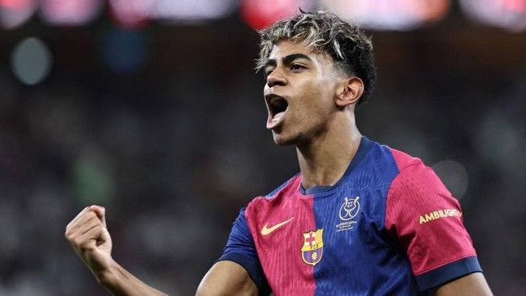

Barcelona vs Inter: Lamine Yamal Bisa Lebih Jago Ketimbang Messi

Jakarta, News.id -- Lamine Yamal bisa lebih jago ketimbang Lionel Messi saat Barcelona menjamu Inter Milan dalam leg pertama semifinal Liga Champions di Stadion Olimpic Lluis Companys, Kamis (1/5) dini hari WIB.
Lamine Yamal bakal jadi andalan serangan Barcelona dalam menggempur pertahanan Inter Milan.
Pada musim ini, pemain 17 tahun tersebut mencetak 14 gol dan menyumbang 24 assist dari 48 pertandingan.
Di Liga Champions, Yamal sudah bermain 11 kali dengan mengemas 4 gol dan memberikan 4 assist.
Apabila mencetak gol dalam pertandingan nanti, Lamine Yamal bakal melewati rekor legenda Barcelona, Lionel Messi.
Messi yang bermain untuk Barcelona sejak 2003 hingga 2021 sudah empat kali melawan Inter Milan di Liga Champions.
Meski begitu, dari empat laga tersebut La Pulga belum pernah membobol gawang Nerazzurri. Satu-satunya kontribusi Messi untuk Barcelona ketika bentrok Inter hanya sumbangan satu assist untuk kemenangan 2-1 pada Oktober 2019.
Sejauh ini nasib Lamine Yamal sama dengan Messi ketika jumpa Inter. Yamal tercatat dua kali menghadapi Inter Milan di kompetisi usia muda.
Walaupun dua kali mengantar Barcelona menang, tetapi Yamal belum bisa membobol gawang Inter.
Barcelona memiliki rekor pertemuan dengan Inter di Liga Champions sebanyak 12 pertemuan. Dari laga-laga tersebut, Blaugrana mendominasi dengan enam kali menang.